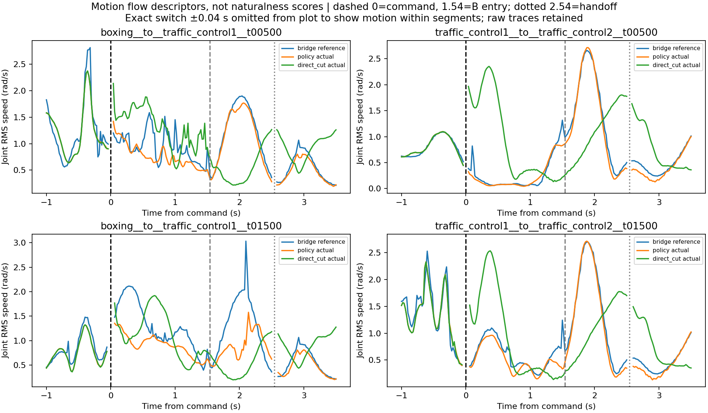
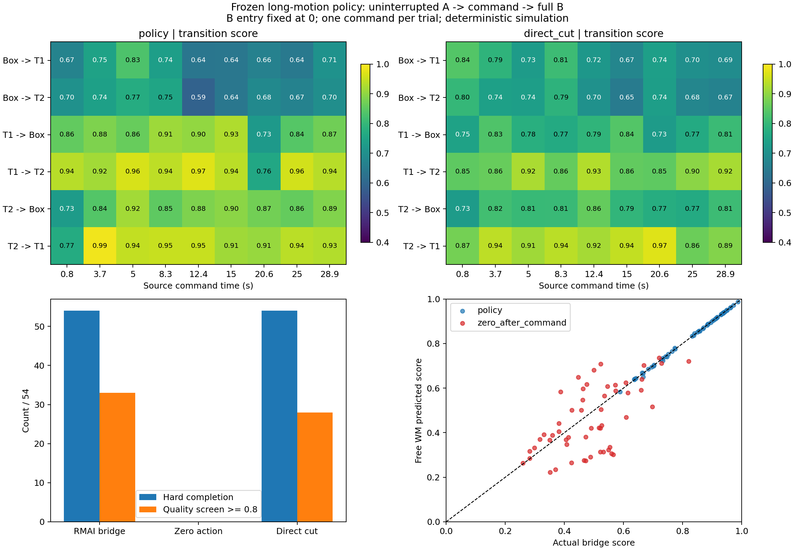
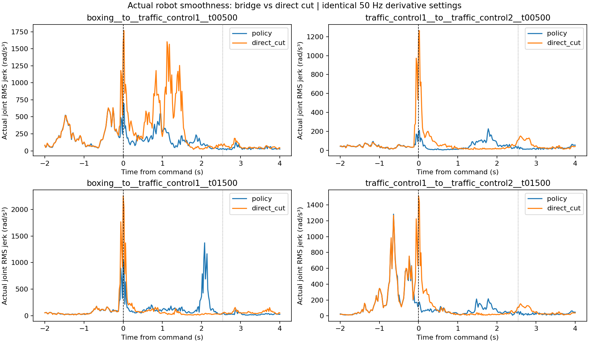
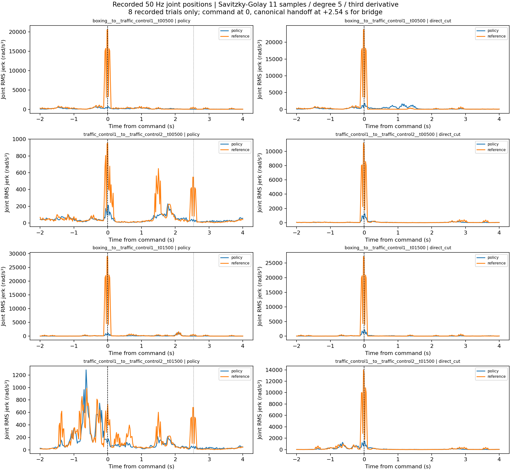

Long-motion 전환 실험 기록
54개 조건 × 3방식. 완주와 추종 품질을 구분하고 대표 8회의 jerk를 분석한 기록.
프로토콜·해석·계산 조건 · Trial CSV · Smoothness CSV · 출처와 hash
동작 흐름 재검토
관찰·한계·다음 비교 — 왼쪽 reference / 가운데 bridge 실제 / 오른쪽 direct-cut 실제. 같은 command 시각이며 B phase는 다릅니다.

전체 평가

실제 로봇 jerk
50Hz, SG 11 sample / degree 5. 대표 4조건의 paired 8회에 한정. 단위 rad/s³. 검은 선=명령, 회색 점선=브리지의 canonical B handoff.

Reference와 실제 비교

전환 영상과 전체 연속 실행
solid=실제 로봇, blue ghost=reference. 영상 5fps; 수치 피크는 위 그래프와 CSV 참조.
boxing__to__traffic_control1__t01500__direct_cut__window.mp4boxing__to__traffic_control1__t01500__policy__window.mp4full__boxing__to__traffic_control1__t01500__direct_cut.mp4full__boxing__to__traffic_control1__t01500__policy.mp4traffic_control1__to__traffic_control2__t00500__direct_cut__window.mp4traffic_control1__to__traffic_control2__t00500__policy__window.mp4